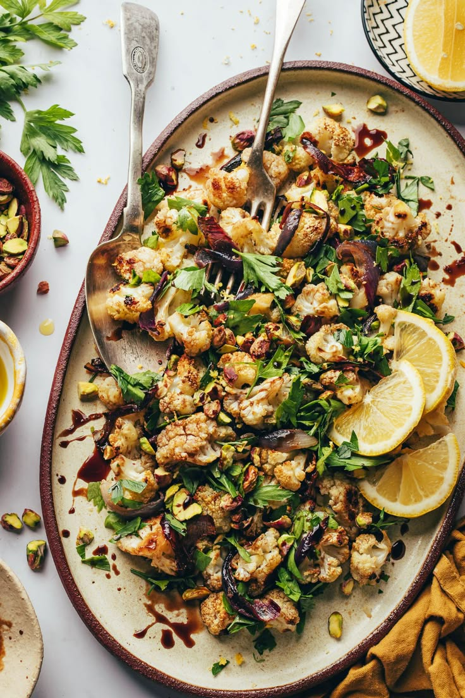

Cauliflower Salad

Description
Salads aren't just for the warm weather months,but when I get my vegetable cravings in the winter I change up my salads with heartier vegetables and ingredients that have warm, smoky flavors, like roasted vegetables and smoked paprika. This Roasted Cauliflower Salad is actually a play on one of my other favorite salads,Mediterranean Farro Salad.
I used the same Lemon Tahini Dressing (because it's so good that I want to pour it on everything) and spiced chickpeas because I thought they would provide just the right punch to complement the mellow roasted cauliflower. The combination of roasted cauliflower, sweet red onions, spiced chickpeas, and tangy lemon tahini dressing might be my favorite yet!
Ingredients
- 1 head cauliflower
- 1/2 red onion
- Salt and Pepper to taste
- 2 Tbsp olive oil
- 1/2 bunch parsley
Lemon Tahini Dressing
- 1/3 cup tahini
- 1/3 cup water
- 1/4 cup lemon juice
- 2 cloves garlic, minced
- 1/2 tsp cumin
- 1/4 tsp cayenne
- 1/4 tsp salt
Spiced Chickpeas
- 1 15oz. can chickpeas
- 1 Tbsp olive oil
- 1/2 tsp smoked paprika
- 1/4 tsp garlic powder
- 1/8 tsp cayenne
- Salt and Pepper to taste
Method
- Preheat the oven to 400ºF. Chop the cauliflower into small florets and place them on a large baking sheet. Slice the red onion into 1/4-inch strips and place them on the baking sheet. Drizzle the cauliflower and onions with olive oil and season with a pinch or two of salt and pepper. Toss the cauliflower and onions until coated in oil, salt, and pepper.
- Roast the cauliflower and onions in the preheated oven for 20 minutes, then stir, return them to the oven, and roast for an additional 10-15 minutes, or until the cauliflower is tender and browned on the edges. Let the cauliflower cool slightly.
- While the cauliflower and onions are roasting, make the lemon tahini dressing. Add the tahini, water, lemon juice, garlic, cumin, cayenne, and salt to a blender. Blend until smooth, then refrigerate until ready to serve.
- Drain and rinse the can of chickpeas. Add them to a skillet along with the olive oil, smoked paprika, cayenne, and a pinch of salt and pepper. Stir and cook the chickpeas over medium heat for about five minutes, or until they sizzle and become slightly crispy. Remove the chickpeas from the heat.
- Pull the parsley leaves from their stems and roughly chop the leaves into small pieces (about 1.5 cups loosely packed, once chopped).
- To build the salad, combine the roasted cauliflower and onions in a bowl with the spiced chickpeas and chopped parsley. Drizzle the lemon tahini dressing over top, and toss to combine. Serve warm or cold.